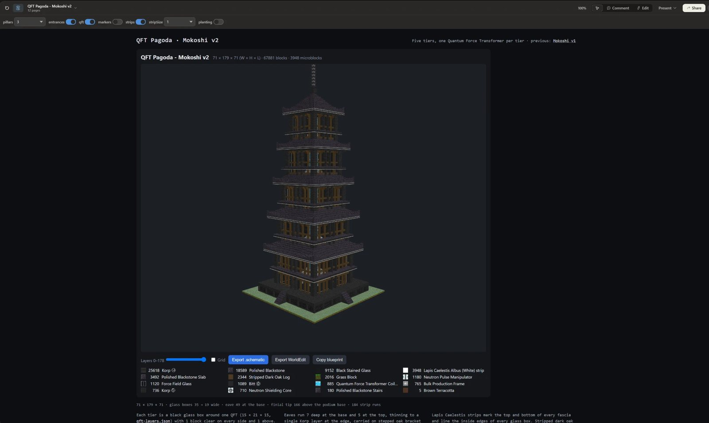
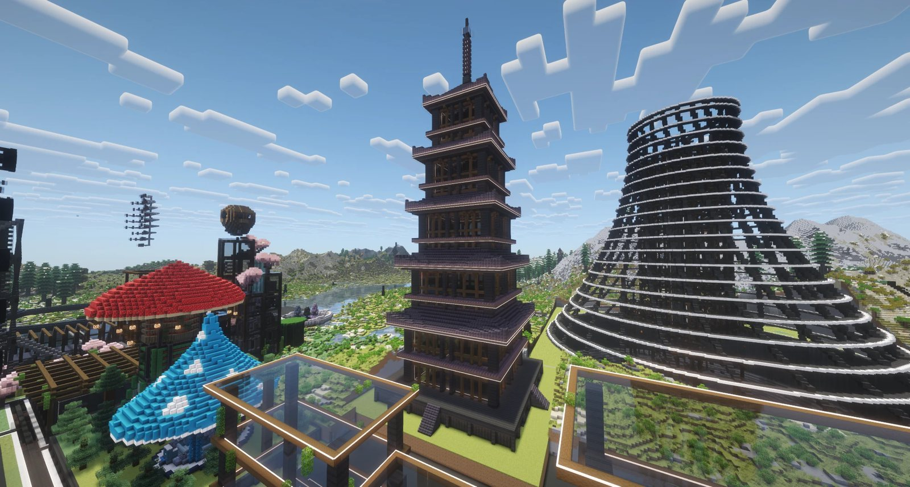
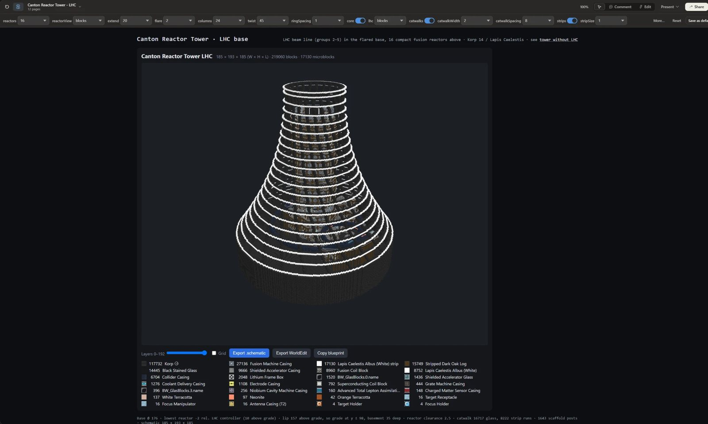
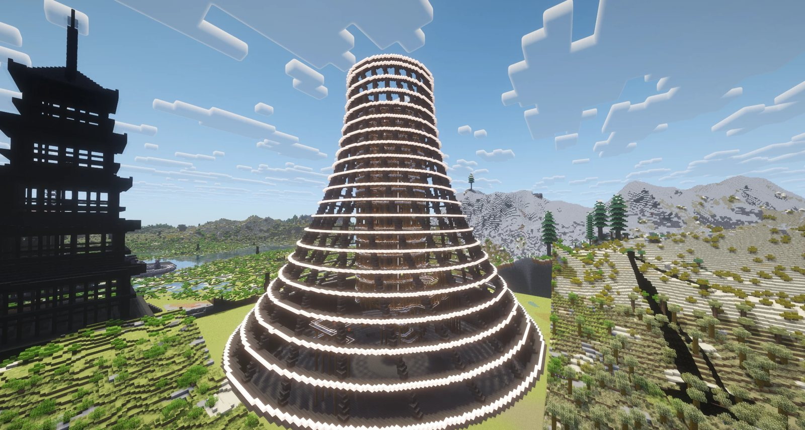
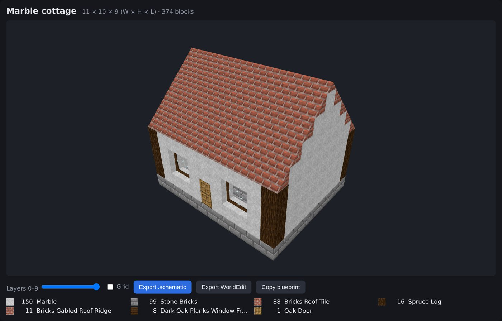
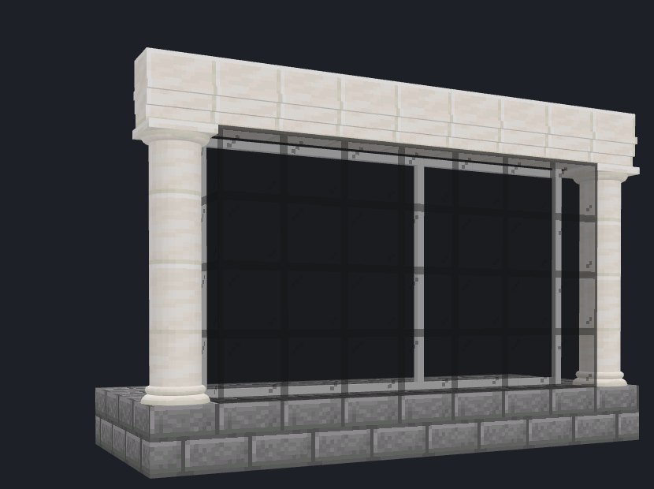
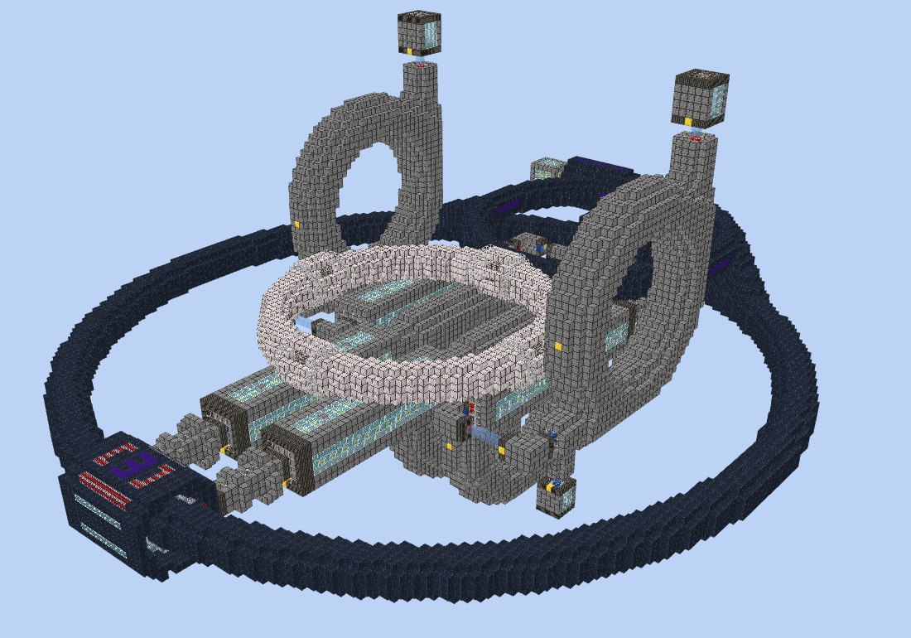
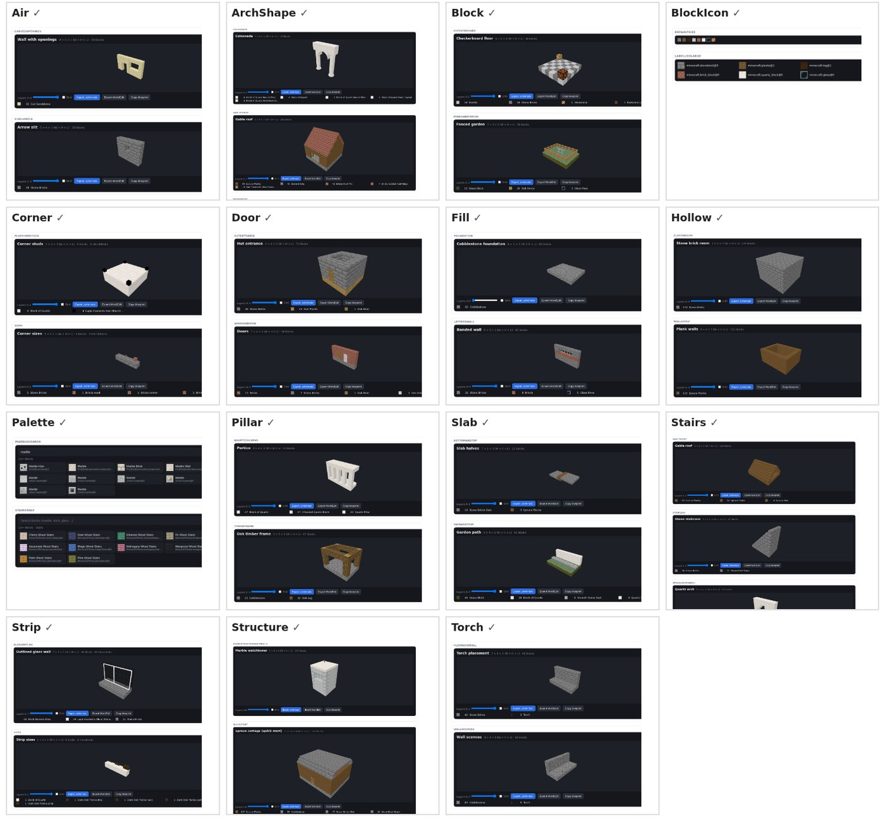

← All tools · Source on GitHub
Describe a building to Claude Design and
it builds it out of real GTNH blocks. The design is drawn in 3D with the pack's own textures,
with a layer slider and a material list. One click exports a .schematic for
Schematica, or one WorldEdit can paste.
Designed in Claude Design, built in game




The viewer

Structure viewer: chisel marble walls, ArchitectureCraft roof tiles and ridge,
ArchitectureCraft window frames with glass panes. The material list underneath counts each block and shape.What it covers
- 6,360 building blocks from GTNH 2.9.0-beta-3: stone, wood, glass, chisel variants, stairs, slabs, logs, fences, panes, walls, doors and torches. Stair, slab, log, door and torch directions are worked out for you.
- Forge Multipart microblocks: strips, posts and pillars along block edges, and nooks, corners and notches. Several can share one block space, like in game.
- All 106 ArchitectureCraft shapes: roof tiles, corners, ridges, valleys and hip pieces, slopes, cornices, round pillars and classical capitals, arches, windows with glass, banisters and balustrades. They're drawn the way the mod draws them, including roofs that join their neighbours. The material list gives each shape's sawbench recipe.
- Export as a Schematica
.schematicor a WorldEdit schematic, or copy the build as JSON.



Set it up in your Claude Design
You need Claude Code signed in with a claude.ai account that has Claude Design, plus Node 22 and git. The design system goes into a Claude Design project of your own.
- Clone and build the library:
git clone https://github.com/philipxjm/gtnh-blueprint.git cd gtnh-blueprint/library npm ci npm run build
- Open
library/.design-sync/config.jsonand delete the"projectId"line. It points at my project, which you can't access. Without it, the sync makes a fresh project for you. - Start Claude Code in
library/and run/design-sync. If it asks you to sign in to Claude Design, run/design-loginfirst.claude /design-sync - The sync builds the components and checks every preview card. Then it asks you to name the new project and approve the upload, and the components appear in the project as they're verified. The first run takes a while.
- In Claude Design, start a new design with that design system and describe what you want:
A two-storey marble villa, 13×9, with an ArchitectureCraft brick gable roof and ridge, dark oak window frames with glass, and black glass windows on the ground floor outlined in white Lapis Caelestis strips.Ask for changes the same way: a bigger overhang, a different stone, another floor.
Getting it into the game
| Schematica | Export .schematic, put the file in
.minecraft/schematics/ and load it. GTNH ships Schematica, and it shows the whole
build as a hologram, but its printer places normal blocks only. My
Schematica fork
also prints microblocks and ArchitectureCraft shapes. For shapes it picks the right item, clicks so
the shape lands turned the right way, then fixes the rest with the hammer and chisel and adds window
glass. It's client-side only:
download the jar. Microblock printing is tested in game; shape printing is new and not
yet tested. |
| WorldEdit | Export WorldEdit, put the file in the server's
config/worldedit/schematics/, then //schem load <name>_worldedit
and //paste. The build's low north-west corner goes at your feet. |
| Matter Manipulator | My Matter Manipulator fork
imports a .schematic as the copy source, then pastes it like a copied region,
microblocks and ArchitectureCraft shapes included. It runs on the server and works with stock
clients: they use /mmschematic, and players with the fork get a file picker.
Download the jar. The
ArchitectureCraft additions are not yet tested in game. |
Other pack versions
The block catalog is GTNH 2.9.0-beta-3. For another version, build the included BlueprintDump
client mod, run /blueprintdump in that instance, and rebuild the catalog from the dump.
The README
has the steps.
The block textures and data come from the mods in GT New Horizons and belong to their authors under each mod's licence. They're included so the design system draws blocks as they look in game.